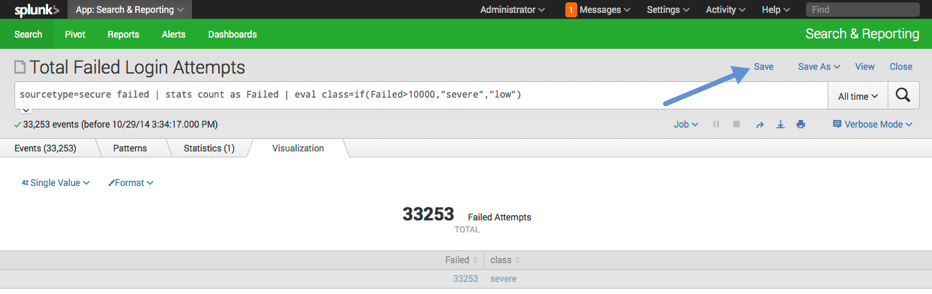
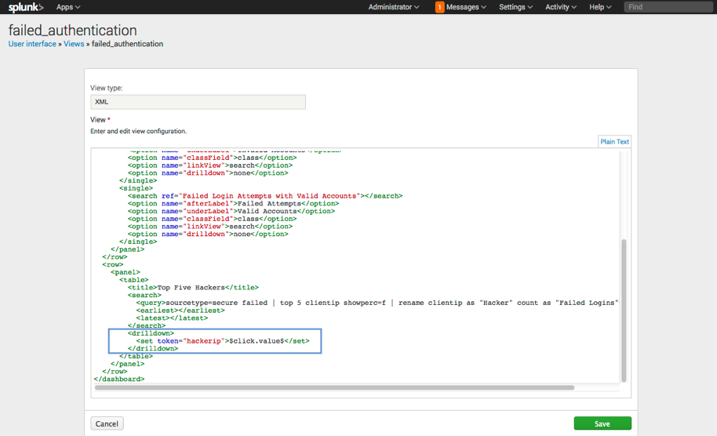

1: Define your goals
What is the use case?
The use case is based on standard IT operations and security monitoring, using the tutorial sample data. This tutorial walks you through some searches using the the "secure" sourcetype, filtering and displaying events involving failed login attempts. You will save your searches as reports, then use those reports to build and customize a useful dashboard that displays key information at a glance.
What does this tutorial cover?
In this tutorial, you'll create a useful dashboard to track and analyze information about hackers trying to gain access to your systems. To do this, you'll complete the following stages.
What are the prerequisites?
- A running instance of Splunk Enterprise 6.2.X. You can use an on-premises instance of Splunk Enterprise, Splunk Cloud, or the Splunk Cloud Free Trial.
- The tutorial sample data, which you can download. Follow these instructions to import the data into Splunk Enterprise before you proceed. Note that if you use Splunk Cloud, you need to work with Support to get the sample data file loaded in to your Cloud instance.
What is the end goal?
You want to create a dashboard that displays
- The number of failed login attempts, shown as total vs invalid accounts vs valid accounts, with values coded for severity by color.
- A list of the top five hacker IP addresses responsible for the most failed login attempts.
- A drilldown table showing the user accounts targeted by each hacker, populated dynamically by clicking on a hacker's IP address in the dashboard.
- A drilldown map showing the IP address location, populated dynamically by clicking on a hacker's IP address in the dashboard.
Watch this 30-second video that demonstrates how the finished dashboard looks when you load and use it.
2: Examine your data
When you get started, all you know is that hackers appear to be making hundreds of failed attempts to log into your system. This activity is tracked in a dataset that is new to you, so you need to examine it. Are there login failure events? What do they look like? How do you find them?
In this stage of the scenario you learn to:
- Review the event patterns in your data to identify specific kinds of events
- Run a search that isolates events that match a particular event pattern.
Step 1: See what events are in the sample data
When you input the sample data (see the "Prerequisites" on the Goals page), you get a source field value that applies to all of it. Start by using that source to search this data.
Run the following search over the All Time time range:
source="tutorialdata.zip:*"This search returns a large number of events. The events have been pulled from a variety of log files within tutorialdata.zip. You may not see any login failure events in the first page of search results.
Note: All searches and reports in this scenario are run over the All Time time range, due to the variable nature of the sample data. Depending on when you imported the sample data into your Splunk Enterprise or Splunk Cloud instance, your searches may display different results than the results shown here.
So now what? Simple. Examine the types of events in the dataset returned by this search.
Step 2: Find the event patterns in the dataset
Use the Patterns tab to see the common event patterns in a dataset. You may be able to find a login error event that you can search on.
1. Click on the Patterns tab.
- When you do this, Splunk Enterprise runs a secondary search on the search results to find the different event patterns there.
- The Patterns tab finds four event patterns. One of them obviously represents a failed password attempt.
- Note: If the Smaller/Larger slider is set to a different position than the default setting displayed above, you may see more or fewer patterns. Set it to that position to get these results.
2. Click on the pattern to see details about the pattern, including the keyword that defines the event pattern, and the search that you should run to get the events represented by the pattern.
-
source="tutorialdata.zip:*" Failed
The Patterns tab is just one way to find out what is in your search data:
- Review the fields returned in the Fields sidebar. Study field summaries and run pre-built searches.
- Open the search in Pivot and play with tables and charts based on the search data.
Step 3: Run another search to find the events represented by the pattern
In the Patterns tab, click View Events.
This runs a search that uses the search string from the end of the last step. The search isolates the events that fit this event pattern. The keyword failed is identified with yellow highlighting.
If you look in the fields sidebar to the left of the event list you can see that all of the events returned by this search have the same source type value. For the rest of this exercise we use that source type in our searches.
This alternate search string returns the same set of events:
sourcetype=secure failedNext we identify fields that we need to extract from these events and set up field extractions for them. Go to the next stage.
3: Extract fields
Now you have a set of events that you can base some dashboard panels on. Before you start building visualizations and constructing dashboard panels, make sure you have everything you need.
In this stage of the scenario you learn how to:
- Identify the fields you need to search on and determine whether they exist or must be extracted from the data.
- Use the Field Extractor to create field extractions.
Step 1: Review what you are trying to do and determine which fields you need
You want to build a dashboard that monitors failed login attempts. You would like to have the following panels:
- A set of panels that provide counts of failed login attempts.
- A panel that lists the top hackers by a count of failed login events they are responsible for.
- A panel that shows the users targeted by a specific hacker with counts of login attempts made by the hacker for each user.
Now look at your events and think about what fields you will need to make these panels.
| Panel concept | How will you implement it? | Are new fields required? |
|---|---|---|
| Counts of failed login attempts, broken out by valid and invalid accounts. | Use a | stats count operation to get an event count.
| No. We can use word searches to differentiate between valid and invalid accounts. |
| Top hackers | Use a | top <fieldname> operation to list the top hackers.
| Yes. We can identify the hackers by the ip address in the event, so we need to extract the ip address values. |
| Targeted users | Design a drilldown search that runs | stats count by <fieldname> for events with a specific ip address.
| Yes. We must extract the user name in each event. Also requires the ip address field mentioned above. |
| Locate hackers on a world map | Use the iplocation and geostats commands to convert the ip address value for a hacker into a plotted location on a map.
| No new fields other than the ip address field mentioned above. |
Note: The stats and top commands used in the example searches above are examples of transforming commands. You use transforming commands to display statistical information in the form of tables, charts, and visualizations.
Step 2: See if the fields you need are already being extracted
In the results for the search sourcetype=secure failed, look at the fields sidebar. The fields sidebar displays two categories of extracted fields: Selected Fields and Interesting Fields. It does not always display every field that Splunk Enterprise has selected for the search.

There do not appear to be any fields that would have ip address or user name values. Just to be sure, click All Fields. This opens the Select Fields dialog, where you can see detail information about all of the fields extracted for this search, not just the ones that are selected or which Splunk Enterprise finds interesting.
A quick review of the Select Fields dialog proves that ip address and user name fields are not being extracted from these events. You have to extract these fields.
Click Extract New Fields in the Select Fields dialog to open the field extractor.
Step 3: Field extraction - Select a sample event
The field extractor opens on the Select Sample step, where you select a sample event for field extraction.
Notice that the field extractor indicates that you are extracting fields for the secure source type. All field extractions created by the field extractor must be associated with a source type. In this case the field extractor obtained the source type from your search. If your search did not contain a source type, you would have to provide one when you entered the field extractor.
1. Click on an event to select it.
- It appears as white text over a blue background in the middle of the screen.
2. Click Next to select the fields that you want to extract from the event.
Field extractions can also be associated with specific host and source values, but the field extractor only enables source type field extractions. Go here for more information about field extractions and field extraction configuration.
Step 4: Field extraction - Select the fields that you want to extract
On the Select Fields step of the field extractor you highlight values in the sample event for the fields that you want to extract. You can extract multiple fields from the same event.
1. Highlight the word root and indicate that it is a sample value of a new field called username.
2. Click Add Extraction.
- When you do this, the field extractor attempts to extract the field from the sample events. You can see the results in the preview table near the bottom of the page. The extracted values for the field get highlighting in the same color as the value in the sample event.
3. Highlight the ip address in the event as a value of a new clientip field.
4. Click Add Extraction again.
- The preview table updates to show how the field extractor finds and extracts values for this second field.
After you have added both field extractions, your preview table should look something like this.
It appears that the fields have been extracted correctly.
Click Next to validate your field extractions and save them.
Note: The field extractor has a variety of features that help you define field extractions and test them. Go here if you want to learn more.
Step 5: Validate and save your field extractions
On the Validate Fields step of the field extractor you can validate your field extractions. You can investigate your field extraction success by toggling to the Matches and Non-Matches views, or by viewing the tabs that have been created for the username and clientip fields.
On this page you should not find errors, but if you do you can try to fix it by removing values in events that have been incorrectly highlighted.
1. Click Next to save the field extraction.
- This extraction pulls out both fields.
2. On the Save page the only thing you need to do is change Permissions to All apps.
- If you keep the default value of Owner, the other dashboards you create with them will only work for you.
- You are given an opportunity to set permissions for the extraction by role. For now just leave it at the default of read access for Everyone and write access for Admin.
3. Click Finish to save your extractions.
Note: All field extractions can have their own set of permissions. Permissions determine who can access and use the fields you extract. Go here for more information about permissions setup.
You are now ready to build a single value visualization. Go to the next stage.
4: Create single-value visualizations
Now that you've taken a close look at the kind of events you are interested in tracking, you are ready to start building a dashboard. First, you want to know how many failed login attempts there have been against your system, and compare how many of those failed attempts were targeting valid accounts and how many were failed attempts at harvesting account data.
In this stage of the use case you learn how to:
- Turn simple searches into single value visualizations
- Add saved reports to a dashboard
Step 1: Search for authentication failures
Re-run your simple search for authentication failures in the Search and Reporting app.
sourcetype=secure failedThe search in the image above returns 33,253 events, which means there are a total of 33,253 login failures in your data. (Your results may vary, due to variations in the sample data file.)
Step 2: Create a single-value visualization
To capture this value in a visualization, you need to modify your search string slightly because the simple search string above is not generating results in a way that supports statistics or visualization.
Adjust your search string to:
sourcetype=secure failed | stats countRun the search, then switch to the Visualization tab. If necessary, change the visualization type to Single Value.
Now you have the single value that you want to display, but it lacks context.
1. Click Format to open the Format menu.
2. Add labels, as shown below.
- In After Label, enter Failed Attempts.
- In Under Label, enter Total.
3. Click Apply to save your format changes.
Step 3: Save your visualization as a report
Save this visualization as a report, by going to Save As > Report.

Give your report a Title, set the Time Range Picker to No, then click Save.
Step 4: Add your report to a dashboard
On the next screen, select Add to Dashboard, and create a new dashboard called Failed Authentication. As shown below, select Panel Powered By Report. Click Save.

You now have a dashboard with a single panel showing the total number of failed authentications. The total is good to know, but it would also be convenient to see at a glance how many of those failed authentication attempts were using valid accounts versus invalid accounts.
Step 5: Repeat these steps for two additional visualizations
Add two additional panels that show:
- The number of failed passwords for invalid accounts
- The number of failed passwords for valid accounts
Follow the preceding steps to run a search for the events you want to count, create a single value visualization, and format the visualization with labels.
Use the following table for reference.
Step 5: Repeat these steps for two additional visualizations
| Setting | Invalid accounts | Valid accounts |
|---|---|---|
| Search string | sourcetype=secure failed "invalid user" | stats count
| sourcetype=secure failed NOT "invalid user" | stats count
|
| After Label | Failed Attempts | Failed Attempts |
| Under Label | Invalid Accounts | Valid Accounts |
As you run each search and format each single value visualization, save it as a report and add it to your dashboard. Your resulting dashboard should look something like this.
Step 6: Start customizing the layout of your dashboard
To save space, rearrange the panels so that they all appear in one row.
1. Click Edit > Edit Panels.
2. Click and drag the panels so that they are arranged as shown below.
3. Click Done.
This looks good, but there is much more that you can do to customize the look of this information using Simple XML.
Ready to find out more? Go to the next topic: 5. Customize Panels with Simple XML.
5: Customize panels with Simple XML
Now that you have some data on your dashboard, take a moment to consider the ideal way to display the information so that it is helpful to the reader and easy to understand at a glance. In this case, you are presenting three, related values representing security risks. Perhaps the values could be color-coded to indicate severity so that anyone accessing this dashboard can see in a glance if there is an urgent concern.
In this stage of the use case you learn how to:
- Use Simple XML and a modified search to color-code your single-value visualizations
- Remove the vertical dividers between multiple panels in a single row to create a more streamlined look.
Step 1: Color-code your values by severity
You can use simple XML to tag your single value visualization with an attribute that instructs Splunk Enterprise to display it in one of four colors to indicate severity. The attribute that you need for this is called classField.
1. First, open the XML editor for your dashboard by clicking Edit > Edit Source.
Note: The classField attribute is one of many available attributes in the <single> object (the tag for a single value visualization in the XML source) that you can use to customize the display of your dashboard panel. Access the reference information in the Dashboards and Visualizations manual.
2. In the XML Editor that opens, observe that you have one <single> object representing each of your three dashboard panels.
3. Add the following line inside each <single> object, as shown.
<option name="classField">class</option>
4. Click Save to return to your dashboard.
5. Next, you need to adjust the search string that populates each dashboard panel to reference to the attribute that you just added to the XML. To do this, click Edit > Edit Panels.
6. Then, click the panel type icon for your first panel, then click on the name of your panel in the dropdown that appears. Then, in the larger dropdown, click Open in Search.
7. Adjust your search query as shown below, and run your search again.
sourcetype=secure failed | stats count as Failed | eval class=if(Failed>10000,"severe","low")8. Observe the changes introduced by your new search string. Your single value, instead of being a plain count now has a name, Failed. You also now have a severity column called class. The logic in your search string evaluates the severity of your value as "severe".
9. Click Save to overwrite the search in your saved report with this new string. Click Save again in the window that appears to save your report.

10. Return to your dashboard. You should now see the first value in red.
Note: Of course, you can set classField ranges with more than two colors. You can even use the charting.fieldColors attribute to determine exactly what colors display. To get an idea of how you might set this up, go here.
11. Repeat the steps above for the other two panels in your dashboard:
- Edit > Edit Panels
- Click the panel type icon, then the name of your panel. In the dropdown, click Open in Search.
- Adjust the search to include as Failed | eval class=if(Failed>10000,"severe","low") at the end.
- Save your new search to overwrite your original search in your saved report.
- Return to your dashboard.
Once you've adjusted the search strings for all three panels, your dashboard should look like this.
In the example above, the Failed Login Attempts with Valid Accounts appears in green (i.e. severity=low) because the value is under 10000, which is the threshold set in the search string. The first two values appear in red because they are both over 10000. As you might have guessed, you can configure the threshold and severity tags applied in your search string to match your use case.
Step 2: Merge your panels to reduce clutter
1. Next, assume you want to display these three single value visualizations in a single, unbroken panel to visually indicate that the numbers are closely related. You can do this by editing the XML to remove the panel tags in between your panels.
2. Go to Edit > Edit Source to open the XML Editor. Remove the two sets of
</panel>
<panel>
tags indicated in the image below.
Your XML should now read as follows:
<dashboard>
<label>Failed Authentication</label>
<row>
<panel>
<single>
<title>Total Failed Login Attempts</title>
<search ref="Total Failed Login Attempts"></search>
<option name="drilldown">none</option>
<option name="classField">class</option>
</single>
<single>
<title>Failed Login Attempts with Invalid Accounts</title>
<search ref="Failed Login Attempts with Invalid Accounts"></search>
<option name="afterLabel">Failed Attempts</option>
<option name="underLabel">Invalid Accounts</option>
<option name="classField">class</option>
</single>
<single>
<title>Failed Login Attempts with Valid Accounts</title>
<search ref="Failed Login Attempts with Valid Accounts"></search>
<option name="afterLabel">Failed Attempts</option>
<option name="underLabel">Valid Accounts</option>
<option name="classField">class</option>
</single>
</panel>
</row>
</dashboard>
3. Click Save to return to your dashboard. What was formerly three separate panels are now merged into one.
4. Now that you have a single panel, you can reduce the text on the page to remove some of the extra labels. Go to Edit > Edit Panels again to remove the old panel titles (if you had them). You can include a more general title in the first panel title space with a title that works for the entire row, as shown.
5. Click Done and review the result.
Ready for the next step? Go to 6. Add Drilldown Panels to finish up this use case with some stylish drilldown panels.
6: Add drilldown panels
You're almost done! In order to fulfill all the goals you set out to achieve with this dashboard, you need to add three more panels:
- A table showing the IP addresses of the five hackers responsible for the most failed authentication attempts.
- A drilldown table showing the user accounts targeted by a selected hacker.
- A drilldown map showing the location associated with the IP address of a selected hacker.
The first panel is fairly straightforward, but the two drilldown panels require some additional Simple XML modifications to enable a click value. In this stage of the use case you learn how to:
- Create additional panels based on saved searches.
- Configure a token for a click value to enable dynamic drilldown in your dashboard.
- Invoke the token in your search strings to create drilldown panels.
Step 1: Create a panel with a table showing the top five hackers
1. Run a search that displays a table of the five IP addresses responsible for the most failed logins.
sourcetype=secure failed | top 5 clientip2. Next, clean up this table a little bit by removing the percent column and renaming the remaining two columns to better describe the context.
sourcetype=secure failed | top 5 clientip showperc=f | rename clientip as "Hacker" count as "Failed Logins"3. The resulting table now has just the two columns you want and more descriptive column titles. Click Save As and save this search as a Dashboard Panel.
4. Add the panel to your existing Failed Authentication dashboard with the panel title Top Five Hackers. Click Save, then click View Dashboard.
5. Your dashboard now includes a table listing the top five hacker IP addresses.
Step 2: Create a drilldown table showing targeted accounts for each hacker IP
Having a list of IP addresses is great, but you want to be able to provide more information about these hackers. First, you want anyone who views this dashboard to be able to click on one of the IP addresses and view a list of targeted accounts. To achieve this, you'll create a drilldown relationship between your Top Five Hackers panel and a new panel that lists user accounts.
Note: Splunk Enterprise dashboards support a variety of drilldown configurations. Read more about dynamic drilldown in dashboards and forms in the Dashboards and Visualizations manual.
1. First, configure the drilldown behavior of your Top Five Hackers panel. Go to Edit > Edit Source and scroll to the section of XML that represents your Top Five Hackers panel.
2. Add the following XML immediately below your <search> tags.
<drilldown>
<set token="hackerip">$click.value$</set>
</drilldown>

3. This code defines a token "hackerip" as a dynamic, clickable value that you can reference in searches using the notation $hackerip$.
4. Click Save to return to your dashboard.
5. Next, add a new panel to this dashboard by clicking Edit > Edit Panels > Add Panel. A slider panel opens with several options for creating a new dashboard panel. You want to create a table based on a new search, so select New, then select Statistics Table.

6. In the slider panel that opens to the right, give your panel the name Victims of $hackerip$ and enter the search string:
sourcetype=secure clientip="$hackerip$" | stats count by username | sort -countThis search invokes the $hackerip$ token that you created earlier and identifies the clientip field as the clickable value for that token. When a user clicks one of the ip addresses in the Top Five Hackers table, Splunk Enterprise runs the search to generate a table of usernames based on that input.
7. Click Add to Dashboard and close the slider panels. Your new panel appears at the bottom of your dashboard. It currently has no data showing because the panel only populates when a user viewing the panel clicks on an IP address in the Top Five Hackers panel.
8. Click and drag your new panel so that it sits directly to the right of the Top Five Hackers panel, as shown.
9. Click Done in the upper right corner to commit your edits.
10. Test out your drilldown panel by clicking one of the IP addresses in the Top Five Hackers panel.
Before:
After:
It looks nice! In the next step you will add a map below these two panels, so make one more edit to save some space in your dashboard.
11. Go to Edit > Edit Panels, then click on the paintbrush icon in your Victims panel. Change the number or rows that display to 5.
12. Click Apply. Now your panels are aligned neatly at the bottom, leaving more room for the map you are about to add.
Step 3: Create a drilldown map showing the location of the hacker
Next, add a panel that plots the location of a hacker's IP address on a map. Like the panel you just created, this panel should be a drilldown panel based on the Top Five Hackers panel, allowing the dashboard user to generate a map by clicking on an IP address.
1. Click Edit > Edit Panels > Add Panel. In the slide panel, click New > Map. Enter Hacker Location for the content title, then enter the following search string.
sourcetype=secure failed clientip="$hackerip$" | dedup clientip | iplocation prefix=cip_ clientip | geostats latfield=cip_lat longfield=cip_lon countOnce again, this search invokes the $hackerip$ token that you created earlier and identifies the clientip field as the clickable value for that token. When a user clicks one of the IP addresses in the Top Five Hackers table, Splunk Enterprise runs the search to generate a map based on that input.
Note: To learn more about creating map visualizations, access the geostats reference in the Search manual. Also, read more about editing and customizing map visualizations in the Dashboards and Visualizations manual.
2. Click Add to Dashboard, then close the slider panel and click Done to save your edits to the dashboard.
3. Click on an IP address to populate both the Victims panel and the map.

Congratulations, you're done! If you enjoyed this tutorial, go further! Consider downloading the Dashboard Example App, which gives you a hands-on way to learn the basic concepts and tools needed to rapidly create rich dashboards using Simple XML.